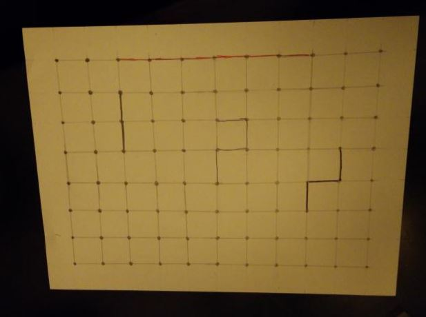
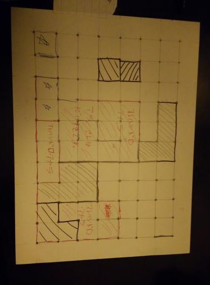

February 21, 2019
The game I created for the paper prototype is called Empathetic Esketit. This game is about connecting the lines together to make a shape and claiming it as a territory on a paper. The mechanics of this game are dice rolling and line drawing. The rules can be found here.
This past monday, I partnered up with Harben and we played each other's games. When we were playing my game, it went by pretty smoothly. In the first game, Harben went first and I went second. On the first turn, I completed a shape right away. After a few more turns, I had won the game by getting fifteen points. Since the game felt very fast, I decided to change point system. Originally the game would end at whoever reaches fifteen points first but I decided to change it to twenty points. Also Harben mentioned how the game felt too easy and he suggested some rules for me. He suggested that on the first three turns, no players can connect their lines yet. He thought that would be more fair and I also understood what he meant since I had already completed a shape on the first turn which was unfair for Harben. He also suggested that after one shape is complete, the players turn will end right away. The rules he suggested has helped my game became more stable and fair when I played with my other friends the next day.
This past Tuesday, I played this game with my brother and friends, Raymond, Alan, and Dro. We played with the rules that Harben suggested to me about. The player order was Raymond, Vanna, Alan, then Dro. The black pencil was Raymond, the blue pen was Alan, the red pen was Dro, and the black sharpey was me. The game felt more fair when applying the no line connecting on the first three turns rules.

After many rounds, Dro had won the game who received fifteen points first.

Dro had suggested to me that maybe I should make my game more challenging by removing the dice roll and allowing each player to draw one line. I thought this might be a good idea however the game will take a long time if each player can only draw one line. Maybe in the future, I'll make this game more challenging.